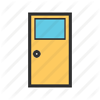
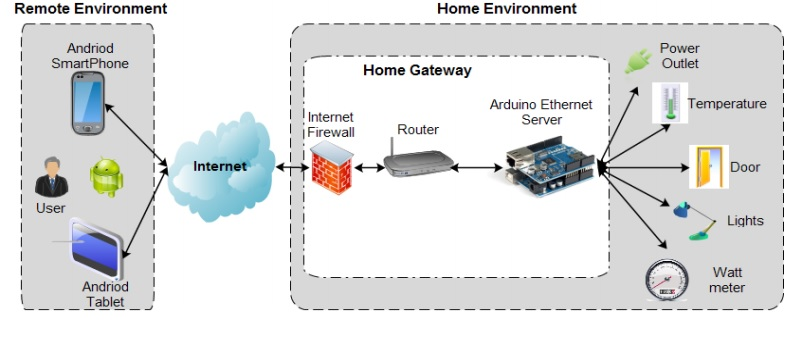

家居安全
系统概述
家居安全系统是传感技术、无线通讯技术、家电控制技术等多种技术为一体的综合应用系统。系统采用BLE、Zigbee、Wi-Fi、Sub-G等无线通信协议，使用户可以利用电脑、手机、平板对居家安全元素进行集中式查询、管理、诊断维护，以满足安保管理、操作简易、智能监控、智能联动等系统需求。
-
安保管理
系统化安全管理方案，随时掌控居家环境，并生成事件分析以及历史记录。根据数据分析，情景模式，状态控制实施全方位的安保方案，达到最完善的家居安全性。
-
操作简易
硬件安装、调试简单，无需布线，普通用户即可完成。操作简单，用户可利用手机、电脑、平板等智能移动终端设备进行窗口化操作，用户体验良好。
-
智能监控
灵活的智能控制手段，支持远程监控，不限距离。完善的智能化管理方式，从定时控制到场景模式，从设备管理到故障申报，报警提醒，全部智能设置，自动执行。
-
智能联动
多个智能安防硬件可以根据用户、系统设置的情景需求，通过智能路由网关产生联动。从而省去用户多余的操作时间，为用户打造智能自动一体化的居家安全体系。
应用场景

-
锁具鉴权
时刻保障家中危险及贵重物品的触及权限，如刀具、枪盒、药箱、保险柜。系统通过指纹或声音识别提供用户身份鉴权的服务。支持远程权限授予，剥离、双重鉴定、多重时空锁定等功能强大的安全类服务。
-
安防摄像
支持24×7全天候摄像监控。家中无人状态时一旦出现险情，立刻开始录像功能，通过家居安全系统及时报警通知用户。随时看，随时拍照或录像。支持聚焦、放大、夜视、双向语音功能。
-

门窗禁制
家中每扇门窗都可智能感知。只需在厨房、卧室和客厅的窗户上，安装多个门窗传感器，用智能终端设备连接到家居管理系统，就可以知悉每扇门窗的状态，并根据用户设置的情景需求跟安防控制产生联动。
-
环境监测
实时监测家中温度湿度变化，PM 2.5含量、有害气体，如甲醛、瓦斯等。并通过智能网关与其他智能硬件，如空调、空气净化器、安全阀门、智能报警装置产生联动。
系统优势
家居安全系统具有以下优势：
-
智能性
具有信息采集、传输、逻辑分析、推理判断、智能联动的家居安全管理系统。
-
便利性
各种控制信息可以以图形化的形式显示，并可以利用编程的方法灵活改变显示信息的种类。
-

开放性
支持多种无线通讯方式，Sub-G、BLE、Zigbee、Wi-Fi。
-
数据性
根据用户的使用记录、习惯，提供机器学习及大数据服务。
系统架构

家居安全系统架构，自左向右由三部分组成：
- 后端系统，直接面对用户，给予用户APP服务、智能设备管理、安全状态反馈、硬件联动机制、图形化界面控制、云平台、大数据等多项核心服务。
- 云端服务器网络，提供数据存储、管理以及SaaS/PaaS服务接口。
- 前端安全硬件，其中包括多种环境参数元器件、指纹锁、门窗感应器、摄像头以及家居路由网关。

评论抢沙发